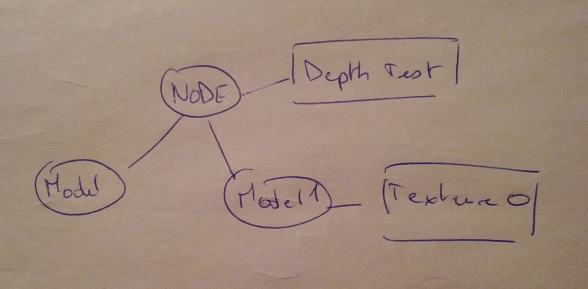
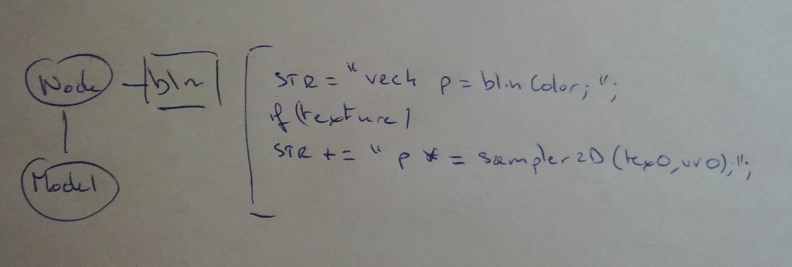
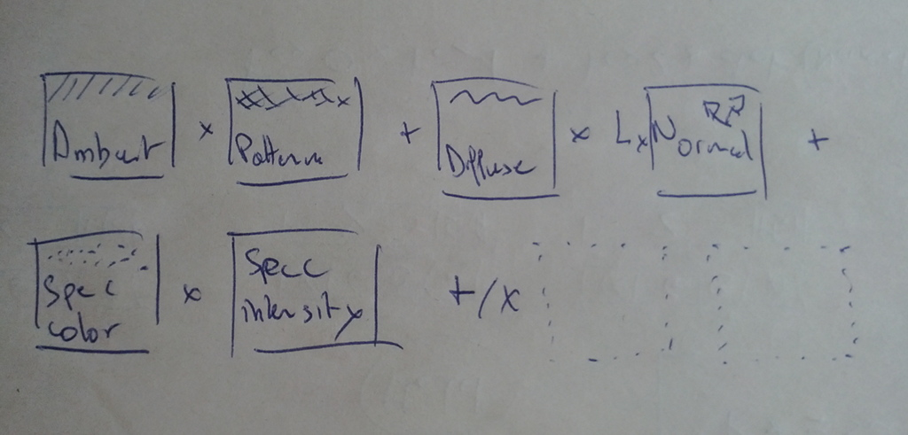
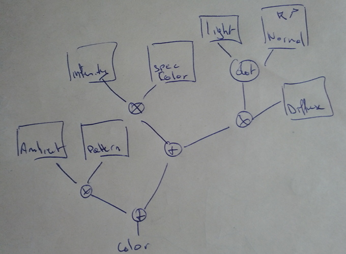
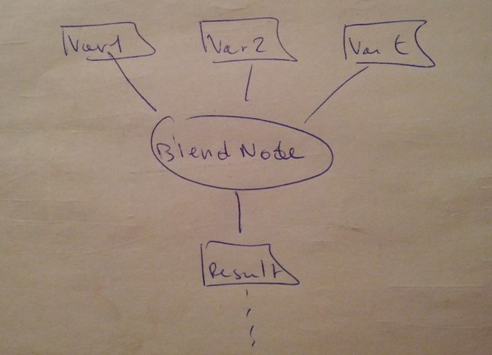
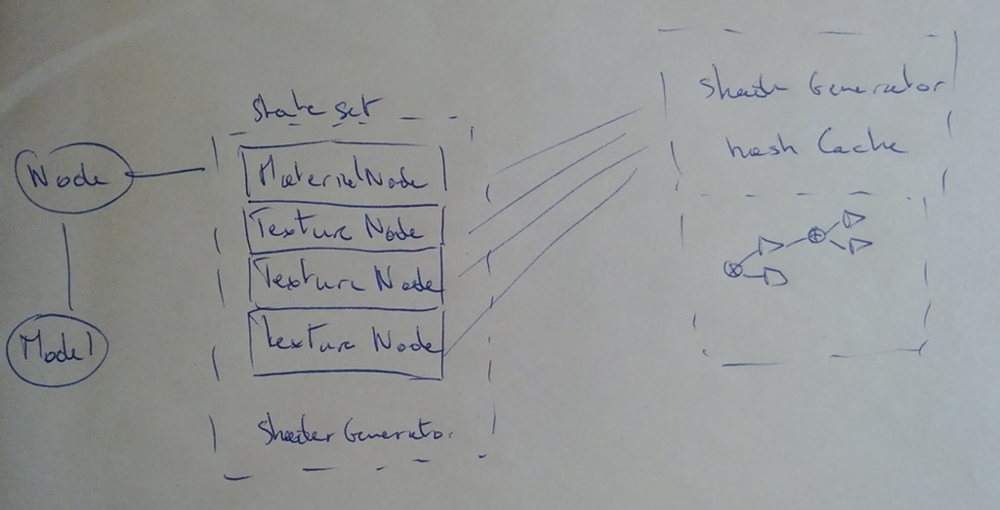

- Cedric Pinson / @trigrou / sketchfab





ShaderNode.TextureRGB = function(sampler, uv, output) {
ShaderNode.Node.call(this);
this._sampler = sampler;
this.connectInput(sampler);
this.connectInput(uv);
if (output !== undefined) {
this.connectOutput(output);
}
this._uv = uv;
};
ShaderNode.TextureRGB.prototype = osg.objectInehrit(ShaderNode.Node.prototype, {
type: "TextureRGB",
computeFragment: function() {
var str = [ "",
this._output.getVariable() + " = TextureRGB( " + this._sampler.getVariable() + " , " +this._uv.getVariable() + ".xy);"
].join('\n');
return str;
},
globalFunctionDeclaration: function() {
var str = [ "",
"vec3 TextureRGB(const in sampler2D texture, const in vec2 uv) {",
" return texture2D(texture, uv).rgb;",
"}"
].join('\n');
return str;
}
});
ShaderNode.BlendNode = function(mode, val0, val1, t) {
ShaderNode.Node.call(this, val0, val1, t);
this._mode = mode;
};
ShaderNode.BlendNode.prototype = osg.objectInehrit(ShaderNode.Node.prototype, {
computeFragment: function() {
var mode = this._mode;
if (this[mode] === undefined) {
mode = 'MIX';
}
return this[mode]();
},
ADD: function() {
return this._output.getVariable() + " = " + this._inputs[0].getVariable() + " + (" + this._inputs[1].getVariable() + " * " + this._inputs[2].getVariable() + ");";
},
MIX: function() {
// result = val0*(1.0-t) + t*val1
return this._output.getVariable() + " = mix(" + this._inputs[0].getVariable() + ", " + this._inputs[1].getVariable() + ", " + this._inputs[2].getVariable() + ");";
},
MULTIPLY: function() {
return this._output.getVariable() + " = " + this._inputs[0].getVariable() + " * mix( " + this._inputs[0].getType() + "(1.0), " + this._inputs[1].getVariable() + ", " + this._inputs[2].getVariable() + ");";
}
});
